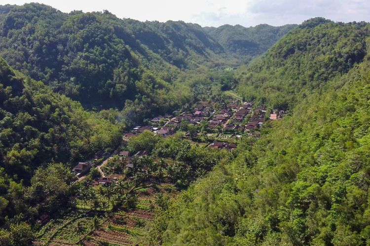

Share :
Desa Wotawati, yang dahulunya sebelum menjadi desa merupakan jalur aliran Sungai Bengawan Solo Purba, sungai terpanjang di Jawa, memiliki sumber di Wonogiri dan bermuara di Gresik, Jawa Timur. Perubahan aliran sungai ini terjadi akibat pengangkatan tektonik jutaan tahun yang lalu. Bekas aliran sungai kini telah menjadi lahan pertanian yang luas, namun ada satu wilayah yang digunakan sebagai tempat tinggal, yaitu Padukuhan Wotawati, Kalurahan Pucung, Kapanewon Girisubo.
Desa Wotawati dianggap sebagai salah satu desa terunik di Indonesia karena memiliki ciri khas yang jarang ditemui di tempat lain. Desa ini terkenal sebagai desa yang paling kesiangan di Indonesia, dimana sinar matahari mulai terlihat sekitar jam 07.00 pagi dan tenggelam sekitar jam 16.30 sore. Hal ini menjadikan Desa Wotawati memiliki siang yang paling singkat di Indonesia. Keunikan ini disebabkan oleh letak geografis desa yang diapit oleh dua bukit, satu dari arah timur dan satu lagi dari arah barat, sehingga menghambat sinar matahari mencapai desa lebih awal. Selain menjadi desa yang unik dengan waktu siang yang singkat, Desa Wotawati juga memiliki beragam destinasi wisata yang menarik. Destinasi wisata ini sangat cocok untuk dikunjungi karena keindahannya yang alami dan asri. Bagi wisatawan yang datang dari luar kota dan membutuhkan tempat menginap, Desa Wotawati menyediakan penyewaan homestay yang terjangkau. Para pengunjung juga dapat menikmati jamuan yang baik serta mencoba beragam kuliner lokal yang lezat. Jika Anda berkunjung ke Desa Wotawati, jangan lewatkan untuk mencicipi kuliner lokal yang khas dan nikmat. Selain itu, Anda juga dapat menjelajahi berbagai UMKM lokal yang menawarkan produk unik dan menarik. Desa Wotawati menawarkan pengalaman yang berbeda dan tak terlupakan bagi para pengunjung yang ingin menikmati keindahan alam dan kebudayaan lokal. Jadi, bagi Anda yang penasaran tentang keunikan Desa Wotawati, ayo segera kunjungi dan nikmati pesonanya!